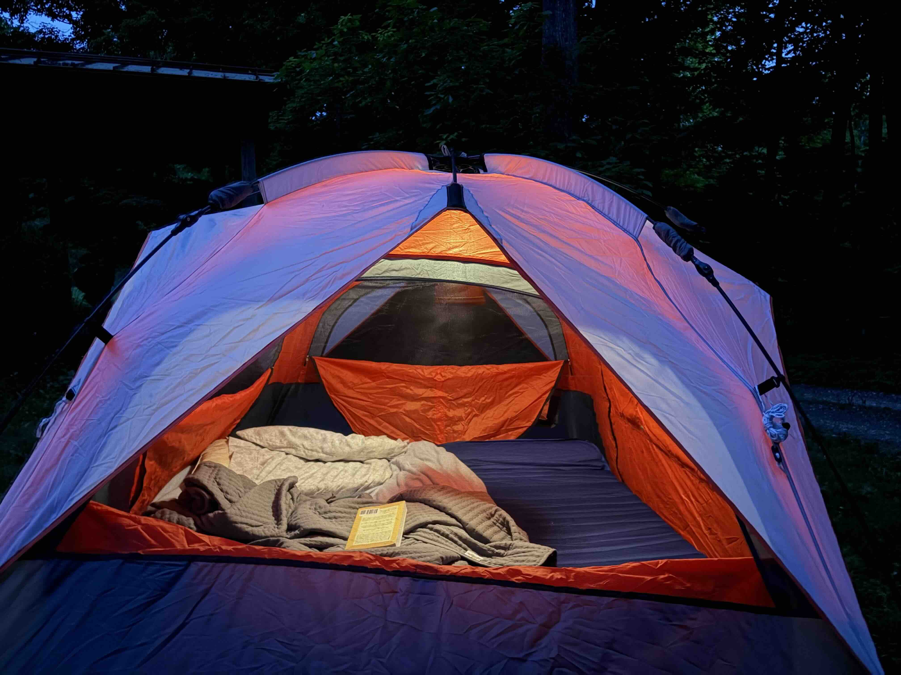
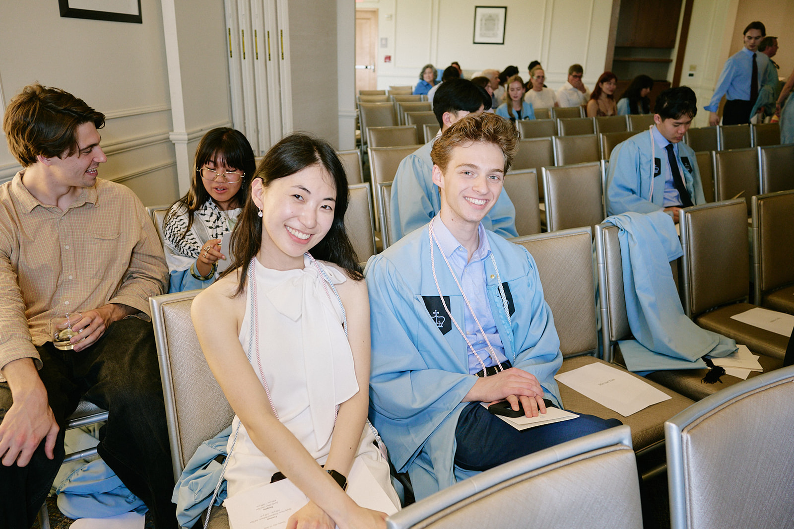
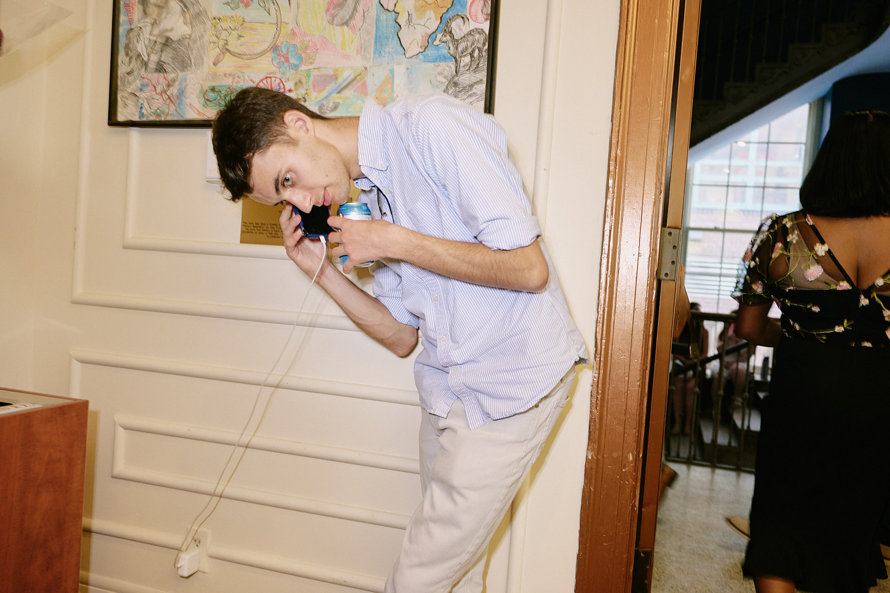
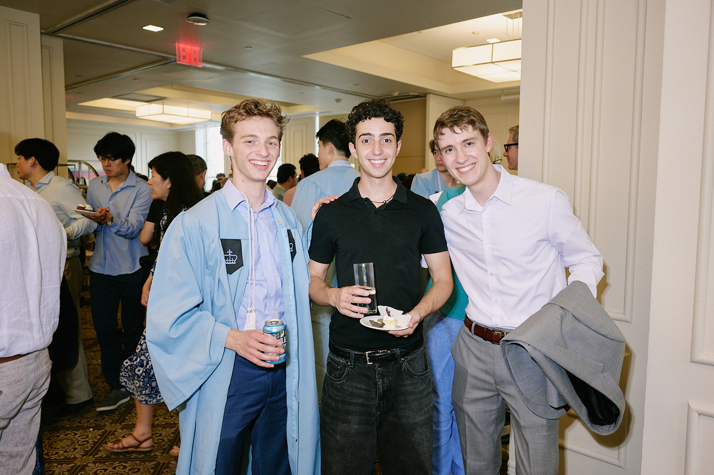

Background
This weekend, I went camping. Yes, camping! And as you might expect, I went camping with Lucia.
Why is this funny?
For those who have not gotten the recap of how Lucia and I initially became a thing, it goes like this: After both acting in Napoleon's Penis, we ran into each other at a couple parties, the first being a cocktail party that Ishaan threw and the second being Oscar's birthday party. We talked for a while at both, but it was only at the second that I asked her to dance. At that point, I figured Lucia was sweet, creative, and attractive, so I kissed her. I then walked her back to her apartment. It was five blocks away, but the walk took about an hour and a half. Along the way, we talked, kissed, laid on the grass, and engaged in a light swaying of hips—i.e. we stood on the grass and danced. By the time we got back to her apartment, it was late (2:00 AM? 3:00 AM?), and outside her place, we discussed when we could see each other again. In that moment, I had the brilliant idea of asking if she wanted to go camping upstate after graduation.
Did I look like a serial killer, or at the very least, an exploitative man who wanted to take her to the woods? Yes, and it was only on walking back to EC that night that I realized it. Despite my ridiculousness, we went on a sunset walk through Riverside a couple days later, strolled through Central Park after move out, and I visited her in the City the weekend before last. Lucia then recommended that she come up to Connecticut, and we went camping.
To answer the question that Nicole posed in the group chat:
Does she have no sense of self-preservation?
Yes, she does have a sense of self-preservation, but also happily takes up adventure. That I have such overwhelmingly nice and good friends also assuaged her doubts. So thank you all for not being gibbons. I got a wonderful camping trip out of it if nothing else.
The Trip Itself
So what did we do? I picked Lucia up from the train station in Wassaic and drove to Millerton, New York. There, we went to the Harney and Sons' flagship, the Oakhurst Diner (which was surprisingly good), and a cute bookstore. We popped into three(!) antique stores, which were all side by side. There was a fourth next to the third, but we were so astonished that there were three lined up that we missed it.1 After Millerton, we got dinner in Salisbury, where we ate porcini ravioli and feta, honey, and arugula on a baguette. Good meal! Four stars. We then bought cheap wine from a local liquor store and went to the campsite, which was along the Housatonic River. Rain was impending throughout the day, and it was coming down while we were in Salisbury, but by the time we got to the campsite, it had abated. The pop-up tent went up in less than a minute, and we laid everything out comfortably for sleeping.
The next day, we went to Kent—of John Garbi, Diane von Furstenberg, and Henry Kissinger fame. We wandered into several stores, a couple of which I had never been to (at least to my recollection).2 We went to Kent Falls, had a picnic, and hiked. We then got dinner at an extraordinary restaurant (that was only as expensive as Le Monde or Community), where we had snow pea risotto and a smoked mozzarella pizza. Five stars.
By this point of the trip, I came to appreciate how Lucia's sense of whimsy and pragmatism complement one another. She's intelligent, analytical, and has a strong sense of what she likes in terms of art and design but combines that with an appreciation of Greek myths and fairy tales. It amounts to some quirky conversations that pair well with her otherwise largely composed affect. She also has a slight sense of mischief, too, that's fun. She would teasingly try out different ways of rage-baiting me—none of which worked. I referred her to Erin for advice.3
On the last day that Lucia was here, Monday, we went to Lake Waramaug, where we waded and lounged in the sun. Lucia didn't want to get too wet, so I carried her bridal-style, dipping her in the water, and threatening to plunge her in entirely should she try pushing me in. It was very playful. Cue your groans.
Driving Lucia to the train station, we sang Hadestown and other show tunes, which she got really excited about.
What's Next?
Starting on either Monday or Tuesday of next week, I'll be in the City to visit. Lucia has a birthday party on Monday evening, so in the event that anyone would like to grab dinner then, let me know! I'll be there through Thursday, but will likely be helping Lucia pack, so may not be available later in the week. That brings me to the second point.
Lucia is going on a month-and-a-half-long trip through China with friends from high school, slated to be back in early August. Going to keep in contact throughout and will hopefully reconnect once she's back.
As an Aside
When we were planning our camping trip, I texted Lucia a PDF of an itinerary I made. She responded:
Getting sent a pdf is maybe the highest form of flirting.
Now, I know why I fell head over heels for Conrad.
***
Here are also some photos from the Phi Beta Kappa induction and reception that I like:


